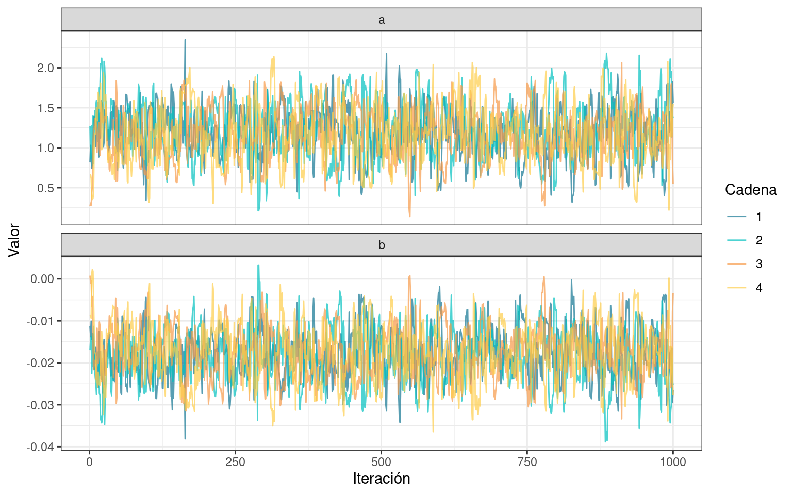
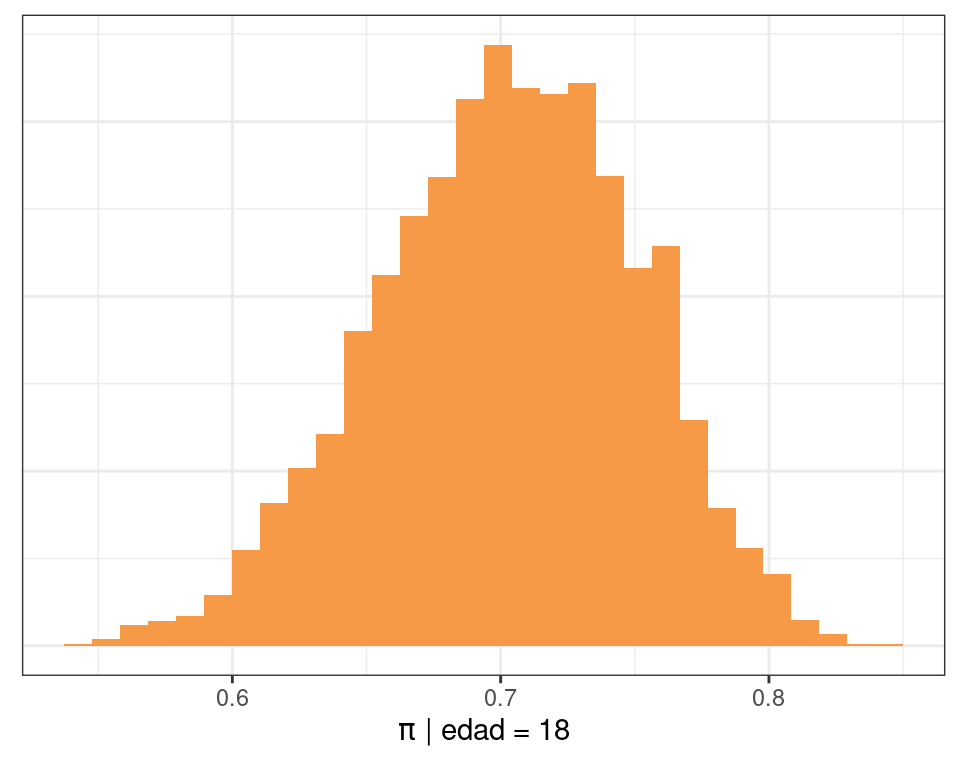
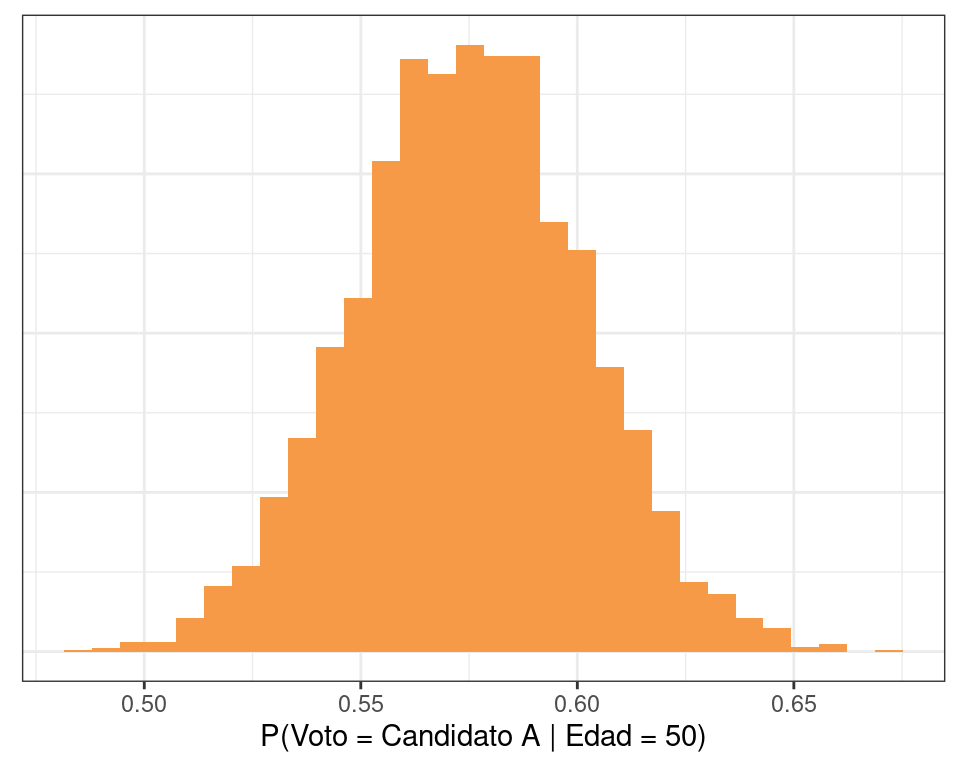
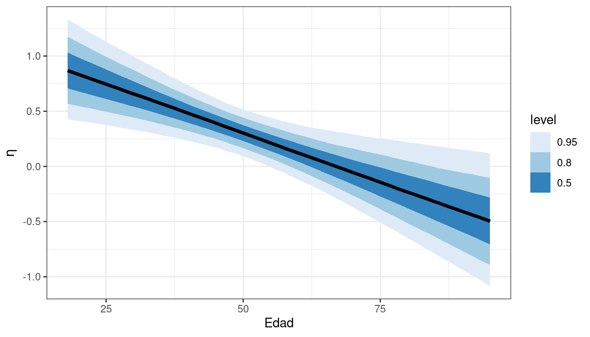
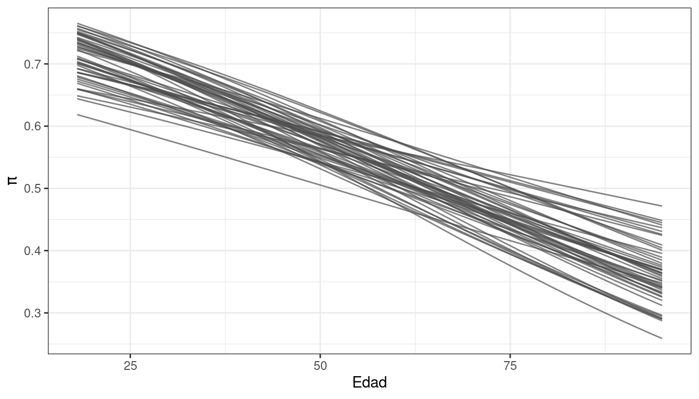
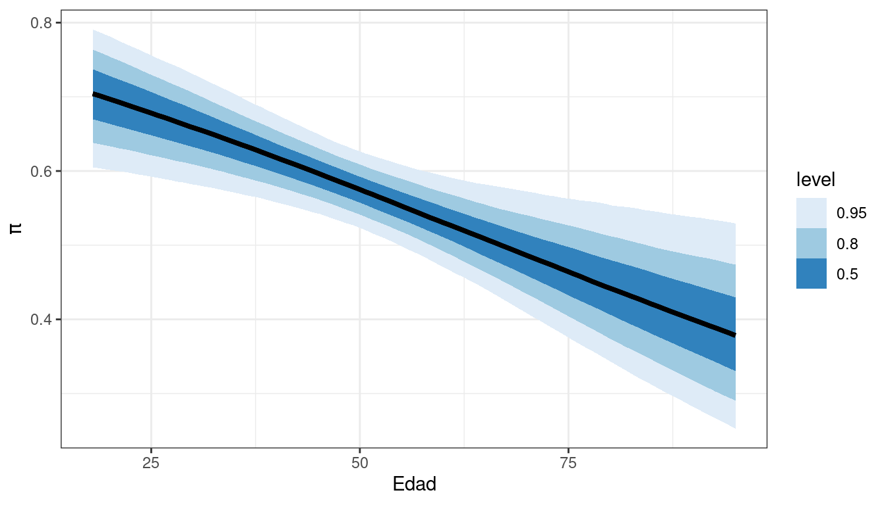
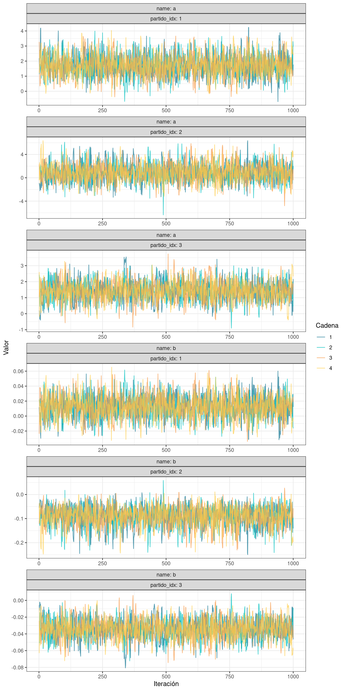

library(dplyr)
library(ggdist)
library(ggplot2)
library(readr)
library(rstan)
library(tidybayes)
colores <- c(
"#107591",
"#00c0bf",
"#f69a48",
"#fdcd49",
"#8da798",
"#a19368",
"#525252",
"#a6761d",
"#7035b7",
"#cf166e"
)16 - Regresión logística con{RStan}
En este programa se muestra código de R que se puede utilizar con el ejercicio Intención de voto de la Práctica 5.
La variable respuesta \(Y\) se define:
\[ \begin{split}Y_i = \left\{ \begin{array}{ll} 1 & \text{si la persona } i \text{ vota al candidato A} \\ 0 & \text{si la persona } i \text{ vota al candidato B} \end{array} \right.\end{split} \]
Se trabaja con los siguientes dos modelos:
\[ \begin{array}{lc} \mathcal{M}_1 & \begin{aligned} Y_i &\sim \text{Bernoulli}(\pi_i) \\ \text{logit}(\pi_i) &= \beta_0 + \beta_1 \text{edad}_i \\ \end{aligned} \\ \\ \mathcal{M}_2 & \begin{aligned} Y_i &\sim \text{Bernoulli}(\pi_i) \\ \text{logit}(\pi_i) &= \beta_{0, j[i]} + \beta_{1, j[i]} \text{edad}_i \\ \end{aligned} \end{array} \]
donde \(j = 1, 2, 3\) indexa a los diferentes partidos.
ruta <- "https://raw.githubusercontent.com/estadisticaunr/estadistica-bayesiana/main/datos/elecciones.csv"
datos <- read_csv(ruta)
head(datos)# A tibble: 6 × 3
voto edad partido
<chr> <dbl> <chr>
1 candidato A 56 azul
2 candidato B 65 rojo
3 candidato A 80 azul
4 candidato B 38 rojo
5 candidato B 60 rojo
6 candidato B 35 azul table(datos$voto)
candidato A candidato B
215 158 prop.table(table(datos$voto))
candidato A candidato B
0.5764075 0.4235925 table(datos$partido)
azul rojo verde
176 81 116 prop.table(table(datos$partido))
azul rojo verde
0.4718499 0.2171582 0.3109920 table(datos$partido, datos$voto)
candidato A candidato B
azul 159 17
rojo 5 76
verde 51 65prop.table(table(datos$partido, datos$voto))
candidato A candidato B
azul 0.42627346 0.04557641
rojo 0.01340483 0.20375335
verde 0.13672922 0.17426273prop.table(table(datos$partido, datos$voto), margin = 1)
candidato A candidato B
azul 0.90340909 0.09659091
rojo 0.06172840 0.93827160
verde 0.43965517 0.56034483qts <- quantile(datos$edad, c(0, 0.2, 0.4, 0.6, 0.8, 1))
breaks <- c(18, 30, 40, 60, 80, 95)
prop.table(table(cut(datos$edad, breaks = breaks), datos$voto), margin = 1)
candidato A candidato B
(18,30] 0.6760563 0.3239437
(30,40] 0.6119403 0.3880597
(40,60] 0.5726496 0.4273504
(60,80] 0.5045045 0.4954955
(80,95] 0.4285714 0.5714286Modelo 1
data {
int<lower=1> N; // Cantidad de observaciones
int<lower=0, upper=1> y[N]; // Vector de respuesta (0 y 1)
vector[N] x;
}
parameters {
real a;
real b;
}
model {
y ~ bernoulli_logit(a + b * x);
}stan_data <- list(
N = nrow(datos),
x = datos$edad,
y = as.numeric(datos$voto == "candidato A")
)
ruta_modelo <- here::here("recursos", "codigo", "stan", "elecciones", "modelo_1.stan")
stan_model <- stan_model(ruta_modelo, auto_write = TRUE)
stan_fit <- sampling(stan_model, data = stan_data, refresh = 0, seed = 1211)print(stan_fit, pars = c("a", "b"))Inference for Stan model: anon_model.
4 chains, each with iter=2000; warmup=1000; thin=1;
post-warmup draws per chain=1000, total post-warmup draws=4000.
mean se_mean sd 2.5% 25% 50% 75% 97.5% n_eff Rhat
a 1.19 0.01 0.34 0.55 0.95 1.19 1.43 1.84 770 1
b -0.02 0.00 0.01 -0.03 -0.02 -0.02 -0.01 -0.01 782 1
Samples were drawn using NUTS(diag_e) at Sat Jun 8 18:38:14 2024.
For each parameter, n_eff is a crude measure of effective sample size,
and Rhat is the potential scale reduction factor on split chains (at
convergence, Rhat=1).df_draws <- spread_draws(stan_fit, a, b)
head(df_draws)# A tibble: 6 × 5
.chain .iteration .draw a b
<int> <int> <int> <dbl> <dbl>
1 1 1 1 0.816 -0.0113
2 1 2 2 1.03 -0.0138
3 1 3 3 0.844 -0.0101
4 1 4 4 0.743 -0.0144
5 1 5 5 0.831 -0.0132
6 1 6 6 1.02 -0.0131df_draws_long <- tidyr::pivot_longer(df_draws, c("a", "b"))
head(df_draws_long)# A tibble: 6 × 5
.chain .iteration .draw name value
<int> <int> <int> <chr> <dbl>
1 1 1 1 a 0.816
2 1 1 1 b -0.0113
3 1 2 2 a 1.03
4 1 2 2 b -0.0138
5 1 3 3 a 0.844
6 1 3 3 b -0.0101ggplot(df_draws_long) +
geom_line(
aes(x = .iteration, y = value, color = as.factor(.chain)),
alpha = 0.7
) +
scale_color_manual(name = "Cadena", values = colores[1:4]) +
labs(x = "Iteración", y = "Valor") +
facet_wrap(~ name, ncol = 1, scales = "free_y") +
theme_bw()
ggplot(df_draws_long) +
geom_histogram(aes(x = value), bins = 30, fill = colores[3]) +
labs(x = "Valor", y = NULL) +
facet_wrap(~ name, ncol = 2, scales = "free") +
theme_bw() +
theme(axis.ticks.y = element_blank(), axis.text.y = element_blank())
mean(df_draws$b < 0)[1] 0.99725\[ \text{expit}(x) = \frac{\exp(x)}{1 + \exp(x)} \]
expit <- function(x) exp(x) / (1 + exp(x))eta_18 <- df_draws$a + df_draws$b * 18
pi_18 <- expit(eta_18)
data.frame(x = pi_18) |>
ggplot() +
geom_histogram(aes(x = x), fill = colores[3], bins = 30) +
labs(x = expression(pi ~ "| edad = 18"), y = NULL) +
theme_bw() +
theme(axis.ticks.y = element_blank(), axis.text.y = element_blank())
eta_50 <- df_draws$a + df_draws$b * 50
pi_50 <- expit(eta_50)
data.frame(x = pi_50) |>
ggplot() +
geom_histogram(aes(x = x), fill = colores[3], bins = 30) +
labs(x = expression(pi ~ "| edad = 50"), y = NULL) +
theme_bw() +
theme(axis.ticks.y = element_blank(), axis.text.y = element_blank())
sample_rows <- function(data, n) data[sample(nrow(data), n), ]
sample_cols <- function(data, n) t(sample_rows(t(data), n))
calcular_eta <- function(pars, x) {
intercepto <- pars[1]
pendiente <- pars[2]
intercepto + pendiente * x
}
n_seq <- 100
n_draws <- 4000
edad_seq <- seq(18, 95, length.out = n_seq)
# (100, 4000)
eta_matrix <- apply(df_draws[c("a", "b")], 1, calcular_eta, x = edad_seq)
df_lines <- data.frame(
eta = as.vector(eta_matrix),
edad = rep(edad_seq, n_draws),
draw = rep(seq_len(n_draws), each = n_seq)
)
df_lines |>
filter(draw <= 50) |>
ggplot() +
geom_line(aes(x = edad, y = eta, group = draw), color = "grey30") +
labs(x = "Edad", y = expression(eta)) +
theme_bw()
df_lines |>
ggplot(aes(x = edad, y = eta)) +
stat_lineribbon() +
scale_fill_brewer() +
labs(x = "Edad", y = expression(eta)) +
theme_bw()
df_lines$p <- expit(df_lines$eta)
df_lines |>
filter(draw <= 50) |>
ggplot() +
geom_line(aes(x = edad, y = p, group = draw), color = "grey30", alpha = 0.7) +
labs(x = "Edad", y = expression(pi)) +
theme_bw()
df_lines |>
ggplot(aes(x = edad, y = p)) +
stat_lineribbon() +
scale_fill_brewer() +
labs(x = "Edad", y = expression(pi)) +
theme_bw()
Modelo 2
data {
int<lower=1> N; // Cantidad de observaciones
int<lower=0, upper=1> y[N]; // Vector de respuesta (0 y 1)
int partido_idx[N]; // Índice del partido
vector[N] x;
}
parameters {
vector[3] a;
vector[3] b;
}
model {
y ~ bernoulli_logit(a[partido_idx] + b[partido_idx] .* x);
}as.factor(datos$partido)[1:10] [1] azul rojo azul rojo rojo azul azul verde azul azul
Levels: azul rojo verdestan_data <- list(
N = nrow(datos),
x = datos$edad,
y = as.numeric(datos$voto == "candidato A"),
partido_idx = as.numeric(as.factor(datos$partido))
)
ruta_modelo <- here::here("recursos", "codigo", "stan", "elecciones", "modelo_2.stan")
stan_model <- stan_model(ruta_modelo, auto_write = TRUE)
stan_fit <- sampling(stan_model, data = stan_data, refresh = 0, seed = 1211)df_draws <- spread_draws(stan_fit, a[partido_idx], b[partido_idx])
head(df_draws)# A tibble: 6 × 6
# Groups: partido_idx [1]
partido_idx a .chain .iteration .draw b
<int> <dbl> <int> <int> <int> <dbl>
1 1 2.19 1 1 1 0.0119
2 1 1.64 1 2 2 0.00267
3 1 2.73 1 3 3 0.00188
4 1 2.20 1 4 4 -0.00796
5 1 2.58 1 5 5 0.00468
6 1 4.17 1 6 6 -0.0241 # TODO: reemplazar etiquetas de partido_idx por partido
df_draws_long <- tidyr::pivot_longer(df_draws, c("a", "b"))
ggplot(df_draws_long) +
geom_line(
aes(x = .iteration, y = value, color = as.factor(.chain)),
alpha = 0.7
) +
scale_color_manual(name = "Cadena", values = colores[1:4]) +
labs(x = "Iteración", y = "Valor") +
facet_wrap(vars(name, partido_idx), nrow = 6, scales = "free", labeller = label_both) +
theme_bw()